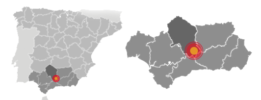

Dynamic1.ProductID
Dynamic2.ProductID
Dynamic3.ProductID
Dynamic1.ProductName
Dynamic2.ProductName
Dynamic3.ProductName
Dynamic1.courseCode
Dynamic2.courseCode
Dynamic3.courseCode
Olive juice extracted from picuda, picual and hojiblanca varieties
Priego de Cordoba, Andalusia, Produced in December 2020
Flavour and Health combined in the best product
Olive Oil Proof Points
Extra Virgin
Organic
Ecological
Certified
Product Journey
See the travel to your destination
maplocationSourcing
Sourced directly from the heart of “Sierras Subbéticas Natural Park”, Priego de Cordoba in Andalusia, Spain
Location: Donlope Servicios Generales, C/ Llana Nº 5 , El Cañuelo. Priego de Córdoba 14815, Spain
Andalusia's geography and climate, gifted with mountain wealthy slopes, mild winters and long and hot dry summers, rank as the best for olive cultivation. Olives from this region are destined exclusively for olive oil production. This region is located in the geographical heart of the “Sierras Subbéticas Natural Park”, which has its own microclimate, characterized by suitable rainfall and substantial temperature differences between seasons. It can drop to around 0º C (32º F) in winter and rise to 35º C (95º F) in warm western Mediterranean summer.
Production
Quality
Transparency